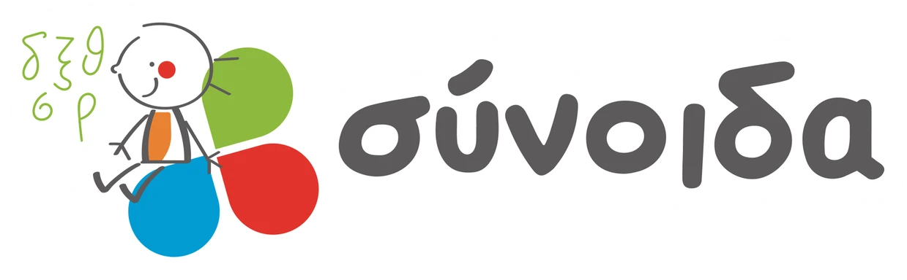

Στο περιεχόμενο

Σύνοιδα
Κέντρα Ειδικών Θεραπειών
Κοινωνικές καταστάσεις
Ανοίγουμε τις ιστορίες…
Ρυθμίσεις θεραπευτή
✕
Εμφάνιση
Περιγραφές εικόνων
Κείμενα κάτω από τις εικόνες και στη μεγέθυνση.
Σχόλιο για την επιλογή
Μετά τις δύο πιθανές συνέπειες.
Σημειώσεις θεραπευτή
Στόχος και σημεία για συζήτηση.
Μεγαλύτερα γράμματα
Στην κατάσταση και στις επιλογές.
Κοινωνικές καταστάσεις · ΣΥΝΟΙΔΑ
Έτοιμο
Η εικόνα μας
✕